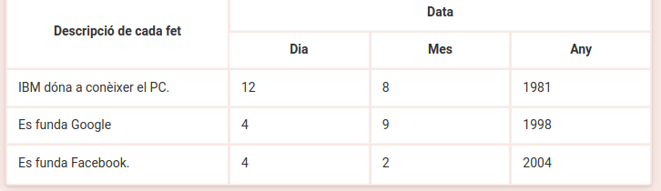

Tasks¶
Markup languages¶
-
After reading the Markup Languages chapter in your notebook:
- Which are the common features of markup languages?
- Which are the advantages of markup languages?
- What are lightweight markup languages? Look for some examples.
-
112-task- Compare the export options when saving a document in LibreOffice Writer.
-
Type the following text in a plain text file,
myfile.txt:Open this file with your browser. How does it look? Change the file extension to html. Does it show the same information? Why?<h1> level 1 header </h1> <h3> level 3 header </h3> -
Search the Internet for a classification of markup languages. Write down 3 examples of each type specifying their main use.
-
Go to openclipart.org, search for "8 ball", download the simplest image you see. Open it with the text editor.
Can you undestand the structure? Try to change the color of the ball (hint: the colors are formatted: #000000).
XML¶
-
XML syntax errors
Review the following XML document, detect errors, and rewrite it correctly
<?xml version="1.0" encoding="UTF-8"?> <frutas> </frutas> < frutas > < fruta > < nombre >cereza< nombre \> < fruta \> < fruta > < nombre >naranja< nombre \> < fruta \> < frutas \> -
Creating XML documents
Write an XML document that stores the following information:
Cities
Name Country Continent New Delhi India Asia Lisbon Portugal Europe Cairo Egypt Africa Note: The continent must be represented by an attribute.
Historical facts

Note: only the description of each fact must be represented by an attribute.
-
The DAW modules
Create an XML document in order to store the modules of the DAW training cycle indicating how many hours last each module and the year in which is taught.
-
Well-formed XML documents
Resolve the tasks in the follow document: Activity statement.
-
List of web page bookmarks
Without using attributes, create a well-formed XML document that describes a list of web page bookmarks, knowing that you want the information for each page to be the name, a short description, and its URL. The data of the markers is as described in the following table:
Name Description URL Abrir llave Computing tutorials. http://www.abrirllave.com/ Wikipedia The free encyclopedia. http://www.wikipedia.org/ W3C World Wide Web Consortium. http://www.w3.org/ -
Convert a sentence into a XML document
Create an XML document so that the markup makes it possible to search for information according to the following fields: recipient of the order, item ordered, delivery address, delivery date.
Order for Mr. Juan Delgado Martínez. The order consists of an A2023 bicycle. To be delivered at Calle Barco 4, third floor, letter A, on 05-19-2021.
-
Sitemaps
Given the following file and folder structure of a website (
examples-of-xml.com):/index.html/contact.html/imagess/printer.gif/images/monitor.gif/images/keyboard.gif/products/printer.html/products/monitor.html/products/keyboard.html
Using the information provided in:
- Standard Sitemap Protocol - sitemaps.org
- Create and submit a sitemap - Images sitemap at Google Developers
Create an XML sitemap ("sitemap.xml") of the website, excluding images.
You can validate it at https://www.mysitemapgenerator.com/service/check.html
Extension
Create another XML document ("sitemap2.xml") including the images and indicating a different title for each one of them.
Note: it is necessary to take into account that each image (
printer.gif,monitor.gifandkeyboard.gif) is included only in the web page of the site that has the same name (printer.html,monitor.htmlandkeyboard.html).